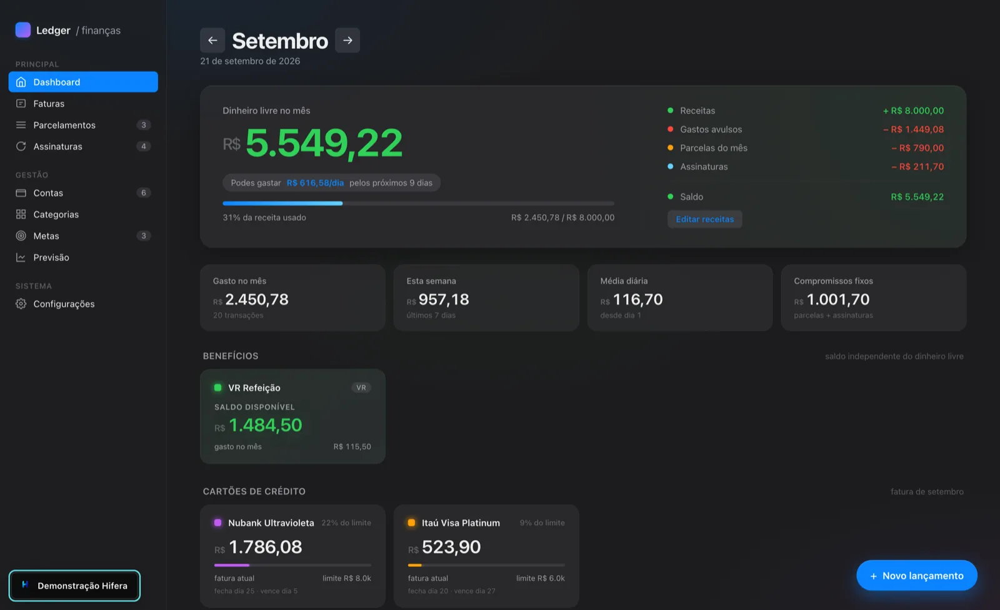
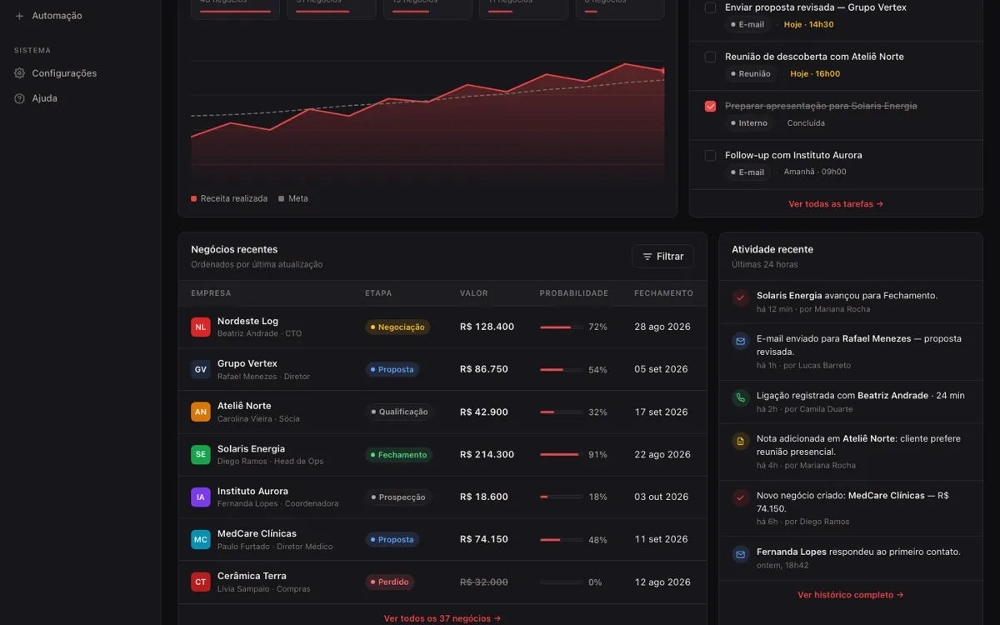
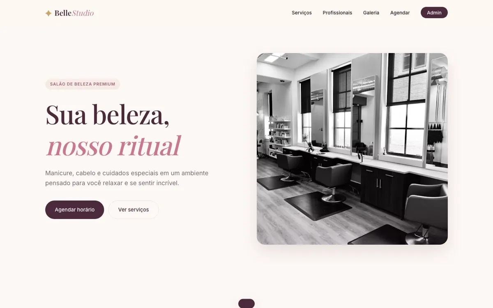
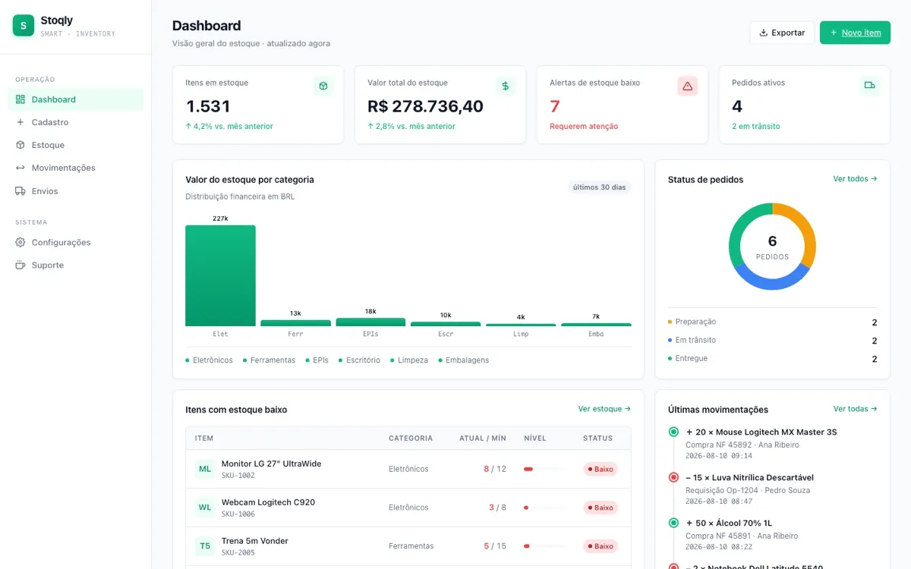

Automação de processos
Eliminamos etapas manuais e conectamos as partes do processo.
Criamos sistemas, automações e ferramentas sob medida para transformar processos repetitivos em fluxos simples de usar.



Precisa parar de fazer manualmente aquilo que já poderia acontecer sozinho.

Informação espalhada em vários lugares.

Horas gastas em atividades que poderiam ser automáticas.

Operação dependendo de pessoas para lembrar o que o sistema poderia fazer.
É aí que a Hifera entra.
Eliminamos etapas manuais e conectamos as partes do processo.
Construímos ferramentas adaptadas à operação real da empresa.
Produtos simples para problemas que não precisam começar do zero.
Não são mockups. São sistemas navegáveis que construímos para testar ideias e resolver problemas reais.
Onde o dinheiro entra, sai e fica preso, num painel só.
Pipeline, follow-up e relatórios de vendas.
Ver casoAgenda online e lembretes automáticos.
Ver casoOrdem de serviço digital e orçamentos.
Ver caso
Código de barras, mínimo e curva ABC.
Ver casoOs quatro projetos acima são demonstrações navegáveis, com dados fictícios.
15 minutos para entender o processo real.
Entregamos em partes úteis, não meses depois.
O sistema acompanha a operação.
Conversa antes de código.
TI corporativa, automação, integrações e sistemas. É quem conecta o que já existe na empresa ao que precisa passar a funcionar sozinho.
Dados, riscos, controles, segurança e operação. É quem olha para o sistema procurando onde ele falha antes de o cliente encontrar.
Você sabe o que vai pagar antes de assinar. A condição é definida pelo escopo acordado, sem taxa escondida nem cobrança surpresa durante o ciclo contratado.
O que você pede entra na fila de desenvolvimento junto com o roteiro do produto. A ordem é definida por impacto real na sua operação, não por quem gritou mais alto.
Sem camada de atendimento, sem ticket que some. Você fala com quem escreveu o sistema e tem resposta em até 24h úteis.
Exportamos tudo o que é seu (contratos, cadastros, histórico) em formato aberto a qualquer momento. Sem lock-in técnico, sem dependência de fornecedor pra ter acesso ao que já é da empresa.
Escrevemos por extenso como os dados são guardados, quem acessa o quê, o que acontece em caso de descontinuidade e o que ainda está em evolução.
Conta pra gente o que acontece hoje. A primeira conversa é gratuita.
Vamos ler com calma e responder em até 24h úteis.